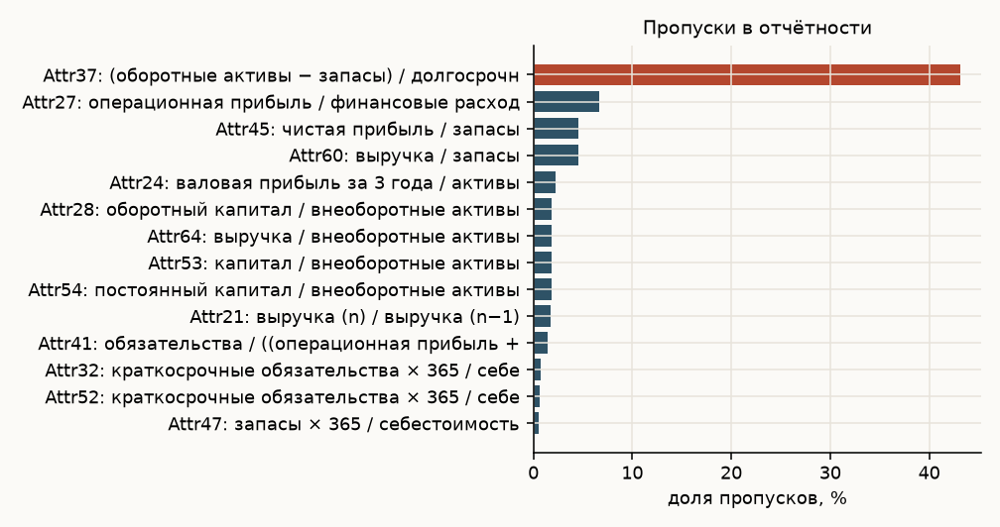
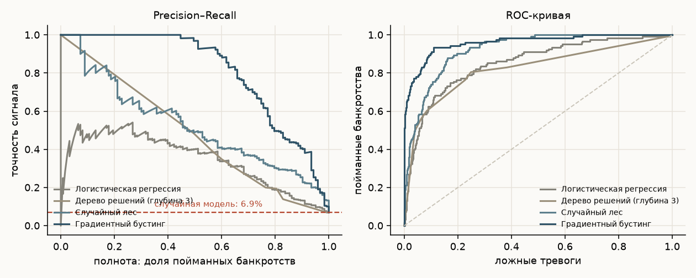
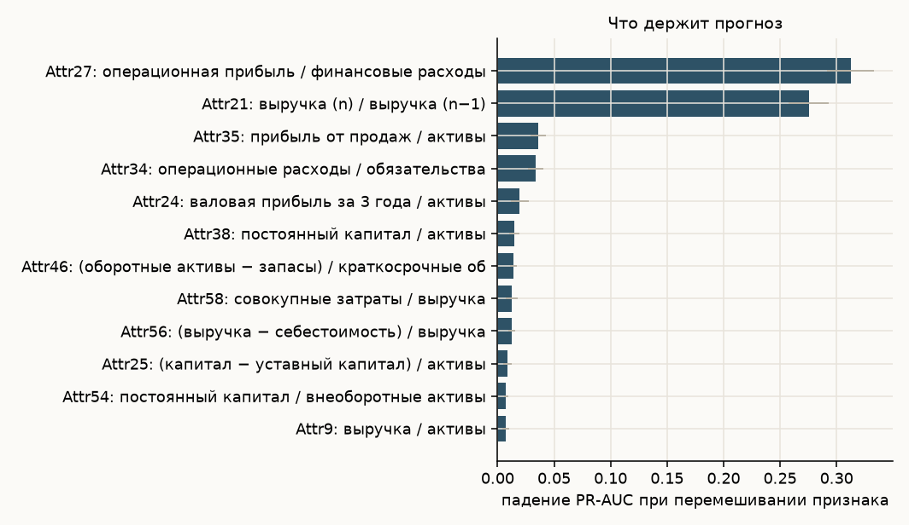
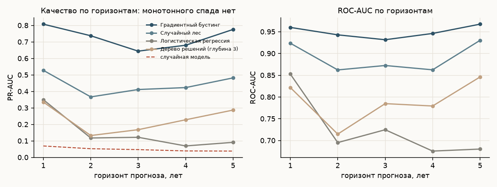
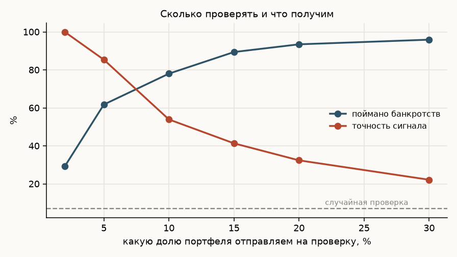

Ануар Беисов · 43 405 наблюдений · 64 финансовых коэффициента · Python: pandas, scikit-learn
Корпоративный кредитный риск на открытых данных: по финансовой отчётности предсказываем, обанкротится ли компания. Задача сильно несбалансированная — банкротится от 3,9 % до 6,9 % выборки, и именно это определяет, как её правильно решать и чем мерить результат.
При доле банкротств 6,9 % модель, которая всем предсказывает выживание, права в 93 % случаев и при этом совершенно бесполезна. Поэтому основная метрика здесь — PR-AUC, площадь под кривой точность-полнота, и сравнивать её нужно не с нулём, а с долей событий. ROC-AUC я привожу как привычный ориентир, но на редких событиях он выглядит оптимистичнее, чем положение дел на самом деле.
UCI «Polish companies bankruptcy data» — пять файлов, в каждом финансовая отчётность за свой год наблюдения. Горизонт прогноза в них обратный: в первом файле данные первого года и банкротство через пять лет, в пятом — данные последнего года и банкротство через год.
| Файл | Компаний | Банкротств | Горизонт |
|---|---|---|---|
| 1year | 7 027 | 271 (3,9 %) | 5 лет |
| 2year | 10 173 | 400 (3,9 %) | 4 года |
| 3year | 10 503 | 495 (4,7 %) | 3 года |
| 4year | 9 792 | 515 (5,3 %) | 2 года |
| 5year | 5 910 | 410 (6,9 %) | 1 год |
Пропуски есть в 49 признаках из 64. Худший — отношение ликвидных активов к долгосрочным обязательствам, 43 % пропусков: у части компаний долгосрочного долга просто нет. Логистическая регрессия и деревья получают медианное заполнение, градиентный бустинг умеет работать с пропусками напрямую.

| Модель | ROC-AUC | Gini | PR-AUC | KS | Brier | PR-AUC на CV |
|---|---|---|---|---|---|---|
| Градиентный бустинг | 0,960 | 0,920 | 0,808 | 0,825 | 0,028 | 0,789 |
| Случайный лес | 0,924 | 0,847 | 0,528 | 0,717 | 0,050 | 0,490 |
| Логистическая регрессия | 0,853 | 0,706 | 0,350 | 0,577 | 0,160 | 0,328 |
| Дерево решений, глубина 3 | 0,822 | 0,644 | 0,336 | 0,556 | 0,143 | 0,284 |
Случайный уровень PR-AUC — 0,069. Бустинг выше него в двенадцать раз.

Разрыв между бустингом и логистической регрессией огромный: 0,81 против 0,35. Это принципиально другая картина, чем в розничном скоринге, где разница измеряется сотыми. Причина в природе связей: высокий долг опасен при слабой ликвидности и вполне терпим при сильной, а линейная модель такое взаимодействие выразить не может.

| Коэффициент | Смысл | Падение PR-AUC |
|---|---|---|
| Attr27 | операционная прибыль / финансовые расходы | 0,313 |
| Attr21 | выручка (n) / выручка (n−1) | 0,275 |
| Attr35 | прибыль от продаж / активы | 0,036 |
| Attr34 | операционные расходы / обязательства | 0,034 |
| Attr24 | валовая прибыль за 3 года / активы | 0,020 |
Два признака решают почти всё, и оба понятны без всякой модели: покрытие процентов операционной прибылью и динамика выручки. Компания, которая не зарабатывает на обслуживание долга и теряет продажи, — классический кандидат в дефолт. Приятно, когда модель приходит к тому же, что и кредитный аналитик, — значит, она выучила экономику, а не артефакты выборки.
Неглубокое дерево превращается в набор правил, который помещается на одну страницу и которым можно пользоваться без компьютера:
прибыль от продаж / активы ≤ −0,029
├── оборотный капитал ≤ 619,7 ............................... тревога
└── оборотный капитал > 619,7
└── обязательства / (операц. прибыль + аморт.) ≤ 0,034 ... тревога
прибыль от продаж / активы > −0,029
├── постоянный капитал / активы ≤ 0,528
│ └── операц. прибыль / фин. расходы > 0,972 .............. тревога
└── постоянный капитал / активы > 0,528
└── (капитал − уставный капитал) / активы ≤ −0,008 ...... тревога
Цена простоты честная: PR-AUC падает с 0,81 до 0,34. Правила годятся как первичный фильтр и как объяснение логики кредитному комитету, но заменять ими модель — значит пропустить половину проблемных компаний.

Ожидание было простым: чем дальше горизонт, тем хуже прогноз. Данные этого не подтверждают. Объяснение не в том, что предсказывать на пять лет вперёд легче, а в том, что пять файлов — это разные выборки компаний, а не одни и те же фирмы, прослеженные во времени. Значит, сравнивать горизонты между собой напрямую нельзя, и честный вывод здесь отрицательный: датасет не позволяет измерить зависимость качества от горизонта.

| Доля портфеля на проверку | Поймано банкротств | Точность сигнала | Ложных тревог на одно банкротство |
|---|---|---|---|
| 2 % | 29,3 % | 100 % | 0,0 |
| 5 % | 61,8 % | 85,4 % | 0,2 |
| 10 % | 78,0 % | 53,9 % | 0,9 |
| 15 % | 89,4 % | 41,4 % | 1,4 |
| 20 % | 93,5 % | 32,4 % | 2,1 |
Итог: модель отвечает не «вероятность 0,37», а «вот 5 % портфеля, в которых сидят две трети будущих банкротств». Это и есть форма, в которой прогноз попадает в работу кредитного подразделения: не число, а очередь на ручной разбор.
Важная оговорка к высоким метрикам: отчётность за год до банкротства уже содержит явные признаки бедствия, поэтому переносить эти цифры на задачу раннего предупреждения нельзя. Данные польские, 2000–2013 годы — переносится методика, а не коэффициенты. Код и воспроизведение — в репозитории, ссылка в карточке на сайте.